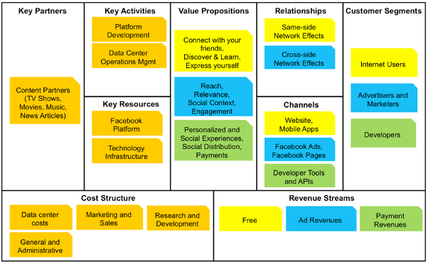
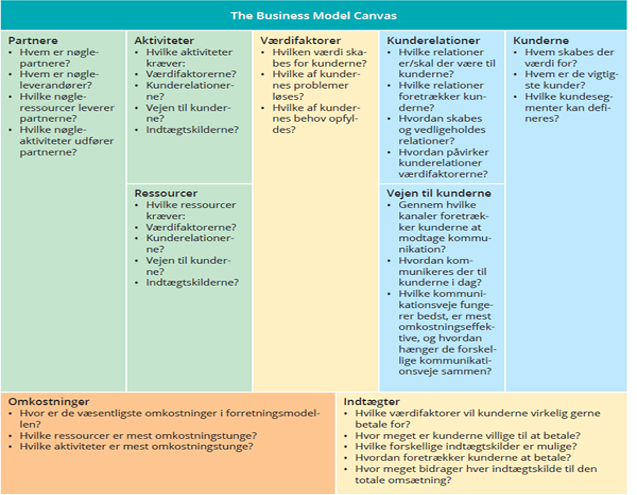
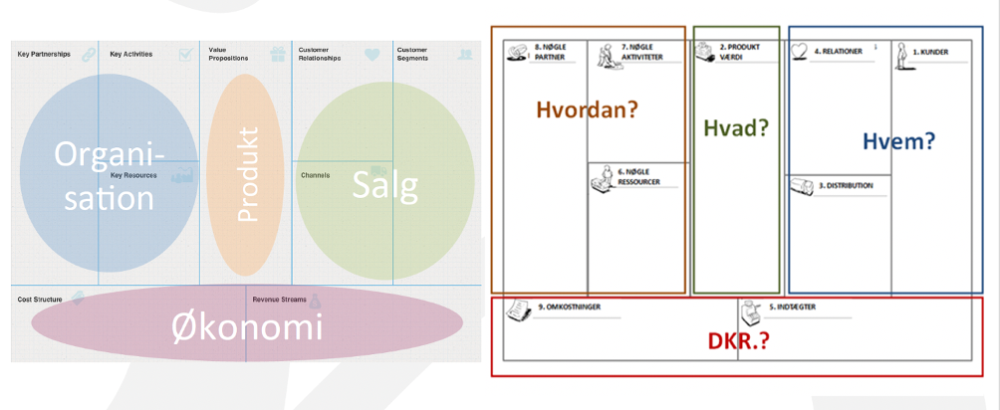

” A business model describes the rationale of how an organization creates, delivers and capturer value “, ALEX OSTERWALDER
En forretningsmodel er et værktøj som anvendes til den strategiske analyse, strategisk planlægning og udvikling af virksomhedens forretningsmodel.
Byggestenen værditilbud beskriver de produkter og ydelser, der har værdi for det enkelte kundesegment. Værditilbuddet bruger man for at opfylde kundes behov. (Det valgte kundesegment) Det kan være en pakkeløsning man tilbyder det valgte kundesegment. Nogle produkter kan være innovative og banebrydende, hvor andre kan minde om de eksisterende produkter på markedet, måske med ekstra funktion eller kvaliteter.
Hvilken værdi leverer vi til kunden?
Hvilke af vores kundes problemer hjælper vi med at løse?
Hvilke kundebehov opfylder vi?
Hvilke samlinger af produkter og ydelser tilbyder vi hvert kundesegment?
Byggestenen der definerer, hvilken type relation, der skal etableres med det bestemt kundesegment. Kunderelationer kan ofte være drevet af tre faktorer:
- Kundehvervning
- Kundefastholdelse
- Mersalg (opsalg)
Hvilen type relation forventer hvert af vores kundesegmenter, at vi etablerer og fastholder til dem?
Hvilke har vi etableret?
Hvor dyre er de?
Hvordan er de integreret med resten af vores forretningsmodel?
Byggestenen der definerer forskelige kundegrupper efter deres behov og adfærd. Kernen af det hele. Et firma er afhængig af kunder for at få indtjening. For at bedre betjene kunderne, deler man dem i forskellige segmenter med fælles behov eller adfærdsmønstre. Netop for at få en bedre forståelse for de særlige kundebehov segmentet har.
Hvem skaber vi værdi for?
Hvem er vores vigtigste kunde?
Byggestenen der beskriver, hvordan en virksomhed når ud til sine kunder. Kanalerne spiller en vigtig rolle i kundeoplevelse.
Hvilke kanaler vil vores kundesegmenter gerne nås gennem?
Hvordan når vi ud til dem nu?
Hvordan er vores kanaler integreret med hinanden?
Hvilke fungerer bedst?
Hvilke er mest rentable?
Hvordan integrerer vi dem med kunderutiner?
Denne byggesten beskriver de vigtige handlinger, altså de primære opgaver, som en virksomhed skal mestre for at få sin forretningsmodel til at fungere. Det er en afgørende faktor i at skabe succes.
Ex. Microsoft – softwareudvikling.
Dell – styring af forsyningskæden.
McKinsey – problemløsning.
Hvilke kanaler vil vores kundesegmenter gerne nås gennem?
Hvordan når vi ud til dem nu?
Hvordan er vores kanaler integreret med hinanden?.
Hvilke fungerer bedst?
Hvilke er mest rentable?
Hvordan integrerer vi dem med kunderutiner?
Denne omhandler de vigtigste aktiver, der er nødvendige som får forretningsmodellen til at virke. Denne byggesten hjælper virksomheden for at kunne udbyde et værditilbud eller fasholde relationer til kundesegmenter. Det kommer dog an på, hvilken type forretnings model man har at gøre med. Disse nøgleressourcer kan inddeles i fire:
- Fysiske
- Økonomiske
- Immaterielle
- Menneskelige
Hvilke nøgleressourcer kræver vores værditilbud?
Vores distributionskanaler?
Kunderelationer?
Indtægtskilder?
Denne byggesten omhandler om netværket af samarbejdspartnere og leverandører, der er nødvendigt for at få forretningsmodellen til at fungere.
Der kan være mange grunde til at virksomheder vil indgå partnerskab med andre virksomheder. Det er måden virksomheder bruger for at optimere deres forretningsmodeller, bl.a. for at reducere risiko eller skaffe mere ressourcer.
Der er 4 forskellige typer partnerskaber:
- Strategiske alliancer mellem ikke konkurrenter
- ” Coopetition ”: strategiske partnerskab mellem konkurrenter
- Joint ventures for at udvikle nye forretninger
- Køber/leverandør - relationer for at sikre pålidelige forsyninger.
Hvem er vores nøglepartnere?
Hvem er vores nøgleleverandører?
Hvilke nøgleressourcer skaffer vi fra partnere?
Hvilke nøgleaktiviteter udføres af partnere?
At skabe værdi, opretholde kunderelationer eller generere indtægsstrømme … Alt de vigtige elementer for at drive en forretningsmodel har en omkostning for erhverv forretning. Denne strukturer handler om alle de omkostninger. Omkostninger skal minimeres, for at øge omsætning. Der kan være nogle forretningsmodeller, der fokuserer på lave omkostningstrukturer.
Der er tale om to typer, hvor man ofte skelner mellem de to typer. Mange forretningsmodeller ligger et sted i mellem.
- Omkostningsbaseret
- Værdibaseret
Hvad er de vigtigste omkostninger i vores forretningsmodel?
Hvilke nøgleressourcer er dyrest?
Hvilke nøgleaktiviteter er dyrest?
Byggestenen ”indtægtstrømme” repræsenterer de penge, en virksomhed genererer fra sine kunder. Ved at stille spørgsmålet, hvilken værdi er vores kunder egentlig villige til at betale for, kan virksomheden generere en eller flere indtægsstrømme fra hvert kundesegment.
Hvilken værdi er vores kunder egentlig villige til at betale for?
Hvad betaler de for nu?
Hvordan betaler de?
Hvordan ville de foretrække at betale?
Hvor meget bidrager hver indtægtsstrøm til den overordnede indtægt? -Business Model Generation, s. 20-50 -pdf.BMC
  